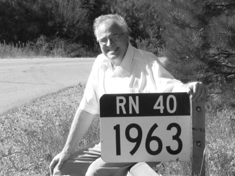

Bienvenidos a mi sitio web en el Centro Atómico Bariloche. Aquí encontrarán información sobre mi actividad profesional. Si lo desean, pueden visitar también mi sitio web personal. Utilicen la barra superior para navegar. Welcome to my website at Centro Atómico Bariloche. Here you will find information about my professional activities. You may also want to visit my personal website. Please use the upper bar to navigate. |  |
Damián H. Zanette - Grupo de Física Estadística e Interdisciplinaria - Centro Atómico Bariloche e Instituto Balseiro
8400 San Carlos de Bariloche, Río Negro, Argentina / (54)(2944)445173 / zanette@cab.cnea.gov.ar